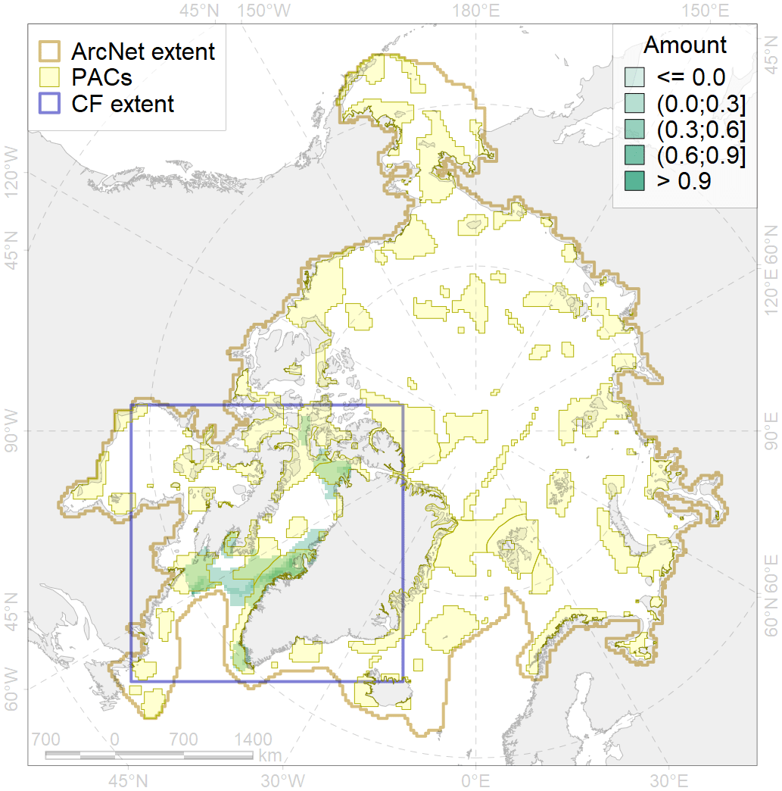
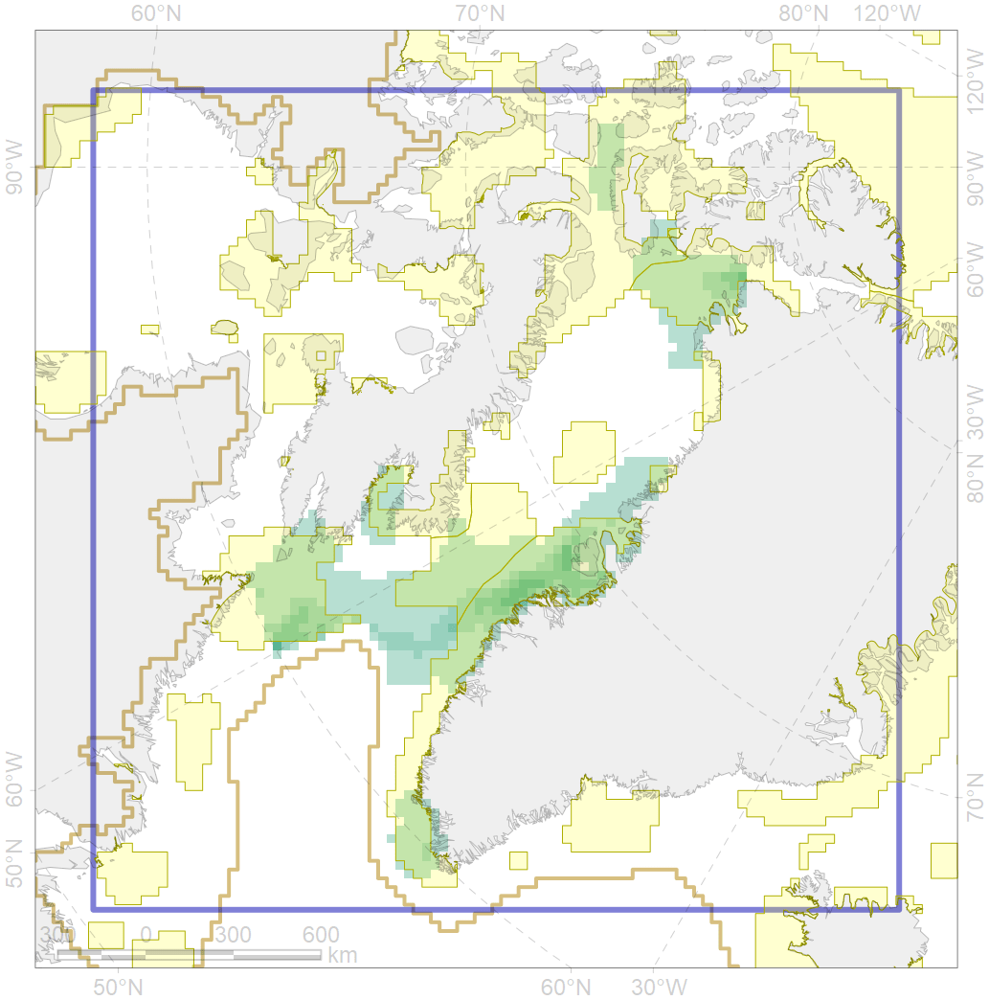

3021

| CF ID | 3021 |
| CF Name | Marginal Ice Zone distribution in April in the Baffin Bay LME |
| Time Period | 1979 - 2017, adopted for recent changes |
| Source(s) | Lavielle M. 1999. Detection of multiple changes in a sequence of dependent variables. Stochastic Processes and their Applications, 83(1): 79–102. doi:10.1016/S0304-4149(99)00023-X. |
| Seasonality | April |
| Depth Horizon | 0 |
| Methodology | Strong C, Rigor IG. 2013. Arctic marginal ice zone trending wider in summer and narrower in winter. Geophysical Research Letters, 40(18): 4864–4868. doi:10.1002/grl.50928. Lavielle M. 1999. Detection of multiple changes in a sequence of dependent variables. Stochastic Processes and their Applications, 83(1): 79–102. doi:10.1016/S0304-4149(99)00023-X. |
| Author Name | Nikita Platonov |
| Notes | |
| Conservation Target Set in the Scenario | 0.12 |
| Conservation Target Achieved in the Scenario | 0.779 (Scenario: 649.2%) |
| PAC ID | Proportion in the PAC | Contribution to ArcNet Target Achievement | PAC’s Contribution to the Achieved Target |
|---|---|---|---|
| 44 | 45.8% | 372.7% | 57.4% |
| 45 | 3.5% | 27.5% | 4.2% |
| 46 | 0.1% | 1.0% | 0.2% |
| 48 | 0.1% | 0.8% | 0.1% |
| 49 | 0.0% | 0.0% | 0.0% |
| 51 | 9.5% | 78.1% | 12.0% |
| 52 | 0.7% | 6.0% | 0.9% |
| 76 | 18.2% | 150.2% | 23.1% |
| inner | 78.0% | 636.4% | 98.0% |
| outer | 22.0% | 12.8% | 2.0% |